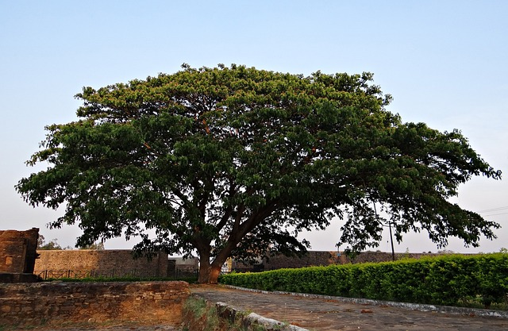
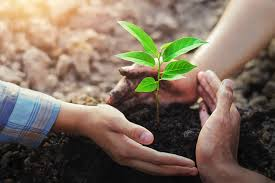

Trees are essential for maintaining the ecological balance of urban areas. This project focuses on identifying key challenges affecting tree sustainability and implementing strategies to protect and restore green spaces. Learn more about our findings, objectives, and community initiatives.


Urban forests are vital green spaces in cities, including parks, street trees, and green rooftops, that enhance air quality, provide shade, reduce the urban heat island effect, and serve as habitats for diverse wildlife.

Conservation involves protecting and restoring urban ecosystems by planting trees, preventing deforestation, and promoting sustainable practices, helping to combat climate change, preserve biodiversity, and reduce the risks of urban flooding.

Communities are essential in sustaining urban greenery by organizing tree-planting drives, advocating for policies that support urban forests, and educating others about the importance of preserving green spaces for future generations.